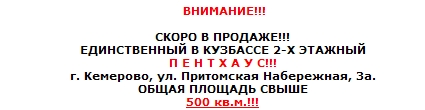
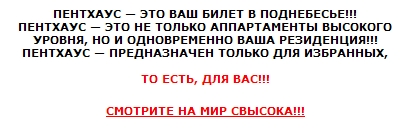
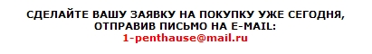
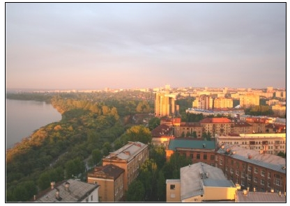

Завтра опубликуем заметку на Кемеровском городском сайте о рынке недвижимости в городе Кемерово. Скорее даже не о самом рынке, а о ценовой политике на нем, которая формируется в последние месяцы.
Пришла мысль спросить комментарии в формате видеоролика у кемеровских риэлтеров. Для того чтобы найти этих самых риэлтеров пошел по одному из известных мне пути. Т.е. Пошел по сайтам кемеровских агентств недвижимости.
На одном из сайтов не мог обойти вниманием вот такой баннер:
Баннер на самом деле в оригинале в два раза больше и совершенно противопоказан к просмотру больным эпиллепсией к тому же моргает.
Баннер вел на чудесную страницу, которая предлагала любому желающему купить

Для тех странных пользователей интернет, которые думают что «Пентхаус» это журнал присутствовало пояснение.

Также на странице были рекомендации поторопиться. Ведь
И если вы самый настоящий пользователь интернет и реальный поклонник пентхаусов на сайте присутствовало предложение


В общем с чувством, что теперь я точно познал способ продажи единственных в Кузбассе пентхаусов, я живу уже три дня.